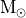
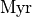
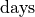
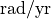
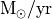
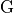

Describing the output of COSMIC/BSE: Columns names/Values/Units¶
Evolutionary states of stars/binaries¶
Since COSMIC uses BSE as it’s core binary evolution algorithm, the output of COSMIC follows most of the same conventions as BSE. The kstar values and evolution stages are nearly identical to their BSE counterparts.
The kstar value specifies the evolutionary state of the star:
| kstar | evolutionary state |
|---|---|
| 0 | Main Sequence (MS), < 0.7  |
| 1 | MS, > 0.7 |
| 2 | Hertzsprung Gap |
| 3 | First Giant Branch |
| 4 | Core Helium Burning |
| 5 | Early Asymptotic Giant Branch (AGB) |
| 6 | Thermally Pulsing AGB |
| 7 | Naked Helium Star MS |
| 8 | Naked Helium Star Hertzsprung Gap |
| 9 | Naked Helium Star Giant Branch |
| 10 | Helium White Dwarf |
| 11 | Carbon/Oxygen White Dwarf |
| 12 | Oxygen/Neon White Dwarf |
| 13 | Neutron Star |
| 14 | Black Hole |
| 15 | Massless Remnant |
The evolutionary changes of the binary are logged in the evol_type column, which is filled with integer values. The key for each integer is listed below:
| evol_type | evolutionary change |
|---|---|
| 1 | initial state |
| 2 | kstar change |
| 3 | begin Roche lobe overflow |
| 4 | end Roche lobe overlow |
| 5 | contact |
| 6 | coalescence |
| 7 | begin common envelope |
| 8 | end common envelope |
| 9 | no remnant leftover |
| 10 | max evolution time |
| 11 | binary disruption |
| 12 | begin symbiotic phase |
| 13 | end symbiotic phase |
| 14 | blue straggler |
| 15 | supernova of primary |
| 16 | supernova of secondary |
BPP DataFrame¶
This pandas.DataFrame tracks a selection of binary parameters at key evolutionary changes. Entries are added with changes in the Evolve Type.
tphys |
Evolution time [] |
mass_1 |
Primary mass [] |
mass_2 |
Secondary mass [] |
kstar_1 |
Evolutionary state of primary (see Evolutionary State of the Star) |
kstar_2 |
Evolutionary state of secondary (see Evolutionary State of the Star) |
sep |
Semimajor axis [] |
porb |
Orbital period [] |
ecc |
Eccentricity |
RROL_1 |
Primary radius divided by Roche lobe radius |
RROL_2 |
Secondary radius divided by Roche lobe radius |
evol_type |
Key moment in evolution (see Evolve Type) |
Vsys_1 |
Change in systemic velocity due to first SN [] |
Vsys_2 |
Change in systemic velocity due to second SN [] |
SNkick |
Magnitude of supernova natal kick [] |
SNtheta |
Angular change in orbital plane due to supernova [] |
aj_1 |
Effective age of the primary [] |
aj_2 |
Effective age of the secondary [] |
tms_1 |
Primary main sequence lifetime [] |
tms_2 |
Secondary main sequence lifetime [] |
massc_1 |
Primary core mass [] |
massc_2 |
Secondary core mass [] |
rad_1 |
Primary radius [] |
rad_2 |
Secondary radius [] |
bin_num |
Unique binary index that is consistent across initial conditions, BCM and BPP DataFrames |
BCM DataFrame¶
This pandas.DataFrame provides several binary parameters at user-specified timesteps in the evolution. By default, COSMIC saves only the first and last timestep in the BCM DataFrame. All values with a _1 label refer to the primary; the BCM DataFrame also includes the same column for the secondary with _1 replaced by _2
tphys |
Evolution time [ ] ] |
kstar_1 |
Evolutionary state of primary (see Evolutionary State of the Star) |
mass0_1 |
Previous evolutionary stage primary mass [] |
mass_1 |
Primary mass [] |
lumin_1 |
Primary luminosity [] |
rad_1 |
Primary radius [] |
teff_1 |
Primary effective temperature [] |
massc_1 |
Primary core mass [] |
radc_1 |
Primary core radius [] |
menv_1 |
Primary envelope mass [] |
renv_1 |
Primary envelope radius [] |
epoch_1 |
Primary epoch [] |
ospin_1 |
Primary spin [] |
deltam_1 |
Primary mass transfer rate [] |
RROL_1 |
Primary radius divided by Roche lobe radius |
porb |
Orbital period [] |
sep |
Semimajor axis [ ] ] |
ecc |
Eccentricity |
B_0_1 |
Initial neutron star magnetic field [] |
SNkick_1 |
Magnitude of first natal kick [] |
Vsys_final |
Final systemic velocity magnitude [] |
SNtheta_final |
Final systemic velocity angle [] |
SN_1 |
Supernova type:
|
bin_state |
State of the binary: 0 [binary], 1 [merged], 2 [disrupted] |
merger_type |
String of the kstar’s in the merger, ‘-001’ if not merged |
bin_num |
Unique binary index that is consistent across initial conditions, BCM and BPP DataFrames |